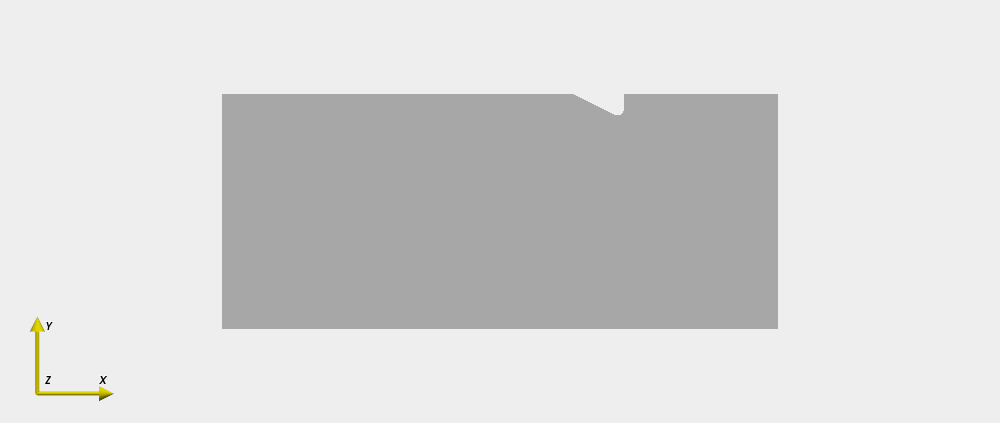
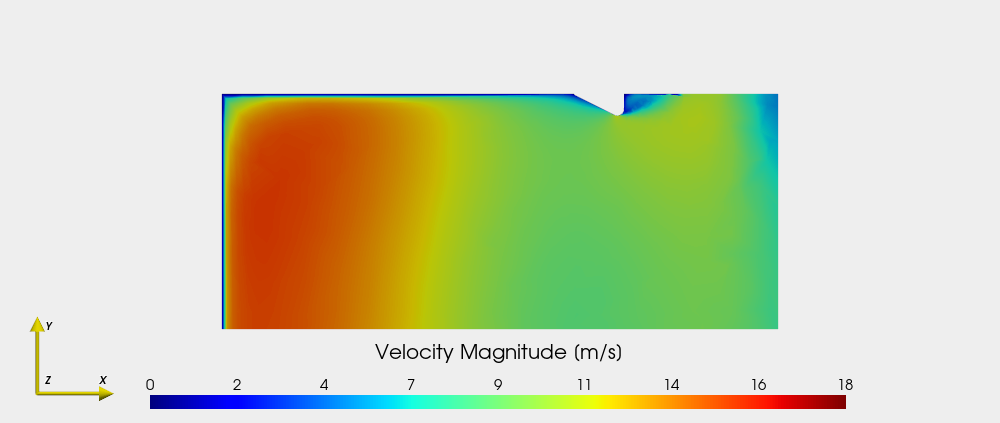
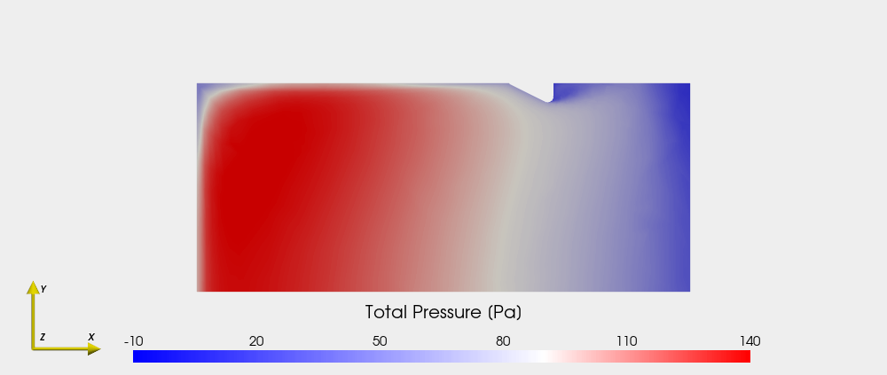
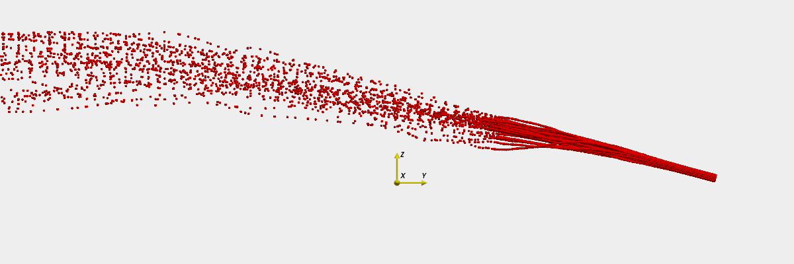

PyVista recipes#
Importing and configuring#
[1]:
from majordome import (
FluentFvParticlesParser,
centered_colormap
)
import pyvista as pv
import numpy as np
[2]:
# No access to X server to avoid warnings:
pv.OFF_SCREEN = True
# Static backend with image dumping support:
pv.set_jupyter_backend("static")
By project standard viewer#
[3]:
class CustomViewer:
""" Provides custom visualization of CFD results. """
slots = ("_theme", "_data")
def __init__(self, data):
self._theme = self.theme()
self._data = data
@staticmethod
def theme():
""" Default theme for rendering project CFD results. """
theme = pv.themes.DocumentTheme()
theme.background = "#EEEEEE"
theme.jupyter_backend = "static"
theme.window_size = [1000, 800]
theme.font.color = "black"
theme.font.size = 15
theme.font.title_size = 20
theme.font.label_size = 15
theme.colorbar_orientation = "horizontal"
theme.colorbar_horizontal.width = 0.70
theme.colorbar_horizontal.height = 0.09
theme.colorbar_horizontal.position_x = 0.15
theme.colorbar_horizontal.position_y = 0.03
return theme
def axes(self, plot, *, scale, pos):
""" Default axes for rendering project CFD results. """
axes = pv.AxesAssembly()
axes.x_color = "#FAF000"
axes.y_color = "#FAF000"
axes.z_color = "#FAF000"
# axes.x_label = ""
# axes.y_label = ""
# axes.z_label = ""
axes.scale = scale
axes.label_color = "black"
axes.label_size = 10
axes.position = pos
plot.add_actor(axes)
def camera(self, plot, *, scale, pos):
""" Manage tight view and set image scale for standard images. """
plot.reset_camera()
plot.camera.zoom("tight")
plot.camera_position = pos
plot.camera.parallel_scale *= scale
def plot(self, *, data=True, opts, camera_pos, axes_pos, camera_scale, axes_scale):
""" Default plot for rendering CFD results over symmetry plane. """
plot = pv.Plotter(theme=self._theme)
if data:
plot.add_mesh(self._data, **opts)
self.camera(plot, scale=camera_scale, pos=camera_pos)
self.axes(plot, scale=axes_scale, pos=axes_pos)
return plot
@staticmethod
def dump(plot, fname):
""" Dump a screenshot of current plot at given directory, if any. """
plot.screenshot(fname, return_img=False, transparent_background=True)
@property
def fields(self):
""" List all available fields for visualization. """
return [key for key in self._data.point_data.keys()]
By project custom loader#
[4]:
def custom_loader(fname):
""" Provides a custom data loader for CFD results. """
reader = pv.CGNSReader(fname)
return reader.read()["Base"]["Zone"]
Plot formatting#
[5]:
def options_outline(color="black", alpha=0.3):
return {"color": color, "opacity": alpha}
[6]:
def options_velocity(vmin=0, vmax=18, n_labels=9):
opts = {
"scalars": "VelocityMagnitude",
"cmap": "jet",
"clim": (vmin, vmax),
"scalar_bar_args": {
"title": "Velocity Magnitude [m/s]\n",
"n_labels": n_labels,
"fmt": "%.0f",
}
}
return opts
[7]:
def options_pressure(vmin=-120, vmax=240, vcenter=0.0):
opts = {
"scalars": "PressureStagnation",
"cmap": centered_colormap("bwr", vmin, vmax, vcenter),
"clim": (vmin, vmax),
"scalar_bar_args": {
"title": "Total Pressure [Pa]\n",
"n_labels": 6,
"fmt": "%.0f",
}
}
return opts
Loading and manipulating data#
[8]:
plane = custom_loader("sample/sample.cgns")
plane = plane.rotate_z(90, inplace=False)
plane
[8]:
| Header | Data Arrays | ||||||||||||||||||||||||||||||||||||||||||||||||||||||||||||||
|---|---|---|---|---|---|---|---|---|---|---|---|---|---|---|---|---|---|---|---|---|---|---|---|---|---|---|---|---|---|---|---|---|---|---|---|---|---|---|---|---|---|---|---|---|---|---|---|---|---|---|---|---|---|---|---|---|---|---|---|---|---|---|---|
|
|
[9]:
conf = {
"camera_pos": "xy",
"camera_scale": 0.7,
"axes_pos": (-2.7, -0.25, 23.8),
"axes_scale": 0.3
}
[10]:
viewer = CustomViewer(plane)
viewer.fields
[10]:
['VelocityMagnitude',
'Turbulent_Viscosity_Ratio',
'PressureDynamic',
'PressureStagnation']
[11]:
opts = options_outline()
plot = viewer.plot(opts=opts, **conf)
plot.show()

[12]:
opts = options_velocity(vmin=0, vmax=18, n_labels=9)
plot = viewer.plot(opts=opts, **conf)
plot.show()

[13]:
opts = options_pressure(vmin=-10, vmax=140, vcenter=90.0)
plot = viewer.plot(opts=opts, **conf)
plot.show()

Particle tracking (WIP)#
[14]:
tracks = FluentFvParticlesParser("sample/sample.fvp")
tracks.variable_names
[14]:
['x', 'y', 'z', 'residence_time', 'time_step']
[15]:
def sample_tracks(tracks, transform=None, n_tracks=50, every_pts=1):
""" Random track sampler for particle data. """
poly_tracks = []
for _ in range(min(n_tracks, tracks.n_tracks)):
idx = np.random.randint(tracks.n_tracks)
table = tracks.data[idx][::every_pts, :]
xyz = table[:, :3]
if transform is not None:
xyz = transform(xyz)
poly = pv.PolyData(xyz)
poly = poly.rotate_x(90, inplace=False)
poly_tracks.append(poly)
return poly_tracks
[16]:
def shift_data(xyz):
""" Shift data for centering in graphics. """
return (xyz - np.array([0, 1, 2.5]))
[17]:
plot = viewer.plot(data=False, opts={}, **{
"camera_pos": "yz",
"camera_scale": 1.3,
"axes_pos": (0, 0, -0.5),
"axes_scale": 0.3
})
plot.window_size = (1200, 400)
poly_tracks = sample_tracks(tracks, transform=shift_data)
for poly in poly_tracks:
plot.add_mesh(poly, color="red", point_size=4,
render_points_as_spheres=True)
plot.show()
